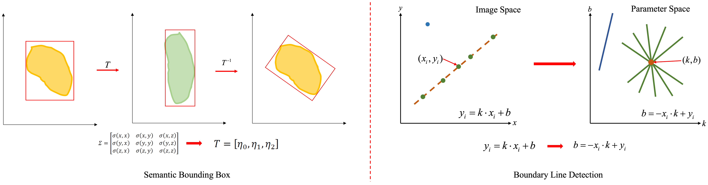

Due to the lack of visual information, visually impaired individuals have significantly reduced ability to perceive three-dimensional scenes. In this project, we utilize 3D reconstruction and understanding technology to help visually impaired individuals efficiently perceive unknown scenes. The overall system structure is as follows, comprising a server for scene perception and a client for interaction with the visually impaired.
Scene 3D reconstruction is the foundational module of the system. We utilize FlashFusion[1] to achieve real-time 3D reconstruction of scenes. The overall structure of the reconstruction system is as follows.
We selected a real office for testing, and the results are as follows:
Scene 3D segmentation is crucial for the system's perception. We use Ins-Conv[2] to achieve real-time, accurate 3D segmentation of scenes. The overall structure of the algorithm is as follows.
We selected a real office for testing, and the results are as follows:
After completing scene reconstruction and understanding, we need to analyze the scene to achieve simplification of its content. This includes semantic bounding box of objects and line detection of walls. 
We selected a real office for testing, and the results are as follows:
To address the computational bottleneck of terminal interaction devices, we utilize a remote server for algorithmic perception, and employ a tactile client for scene interaction. We achieve data transmission through a local area network and have defined dedicated scene files for information exchange.
To achieve efficient information interaction, we designed two scene perception modes: a global mode from a bird's-eye view perspective and a local mode from the user's perspective.
[1] Han, Lei, and Lu Fang. "FlashFusion: Real-time Globally Consistent Dense 3D Reconstruction using CPU Computing." Robotics: Science and Systems. Vol. 1. No. 6. 2018.
[2] Liu, Leyao, et al. "Ins-conv: Incremental sparse convolution for online 3d segmentation." Proceedings of the IEEE/CVF Conference on Computer Vision and Pattern Recognition. 2022.